Hiring Process
The Hiring Process section allows administrators to create and manage customized hiring flows that define the stages candidates go through during recruitment. These flows ensure a structured and consistent hiring experience.
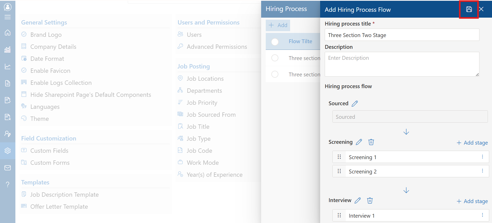
To create a new hiring process, click the +Add button.
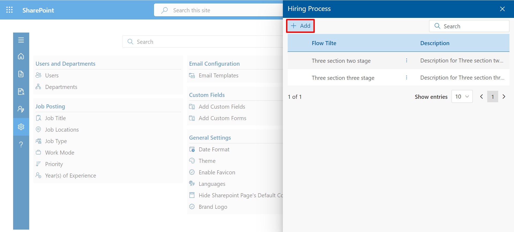
Enter the Hiring Process Title and a Description. You can then build the hiring flow by adding stages such as Sourcing, Screening, and Interviews. Additional stages can be added using the +Add stage option.
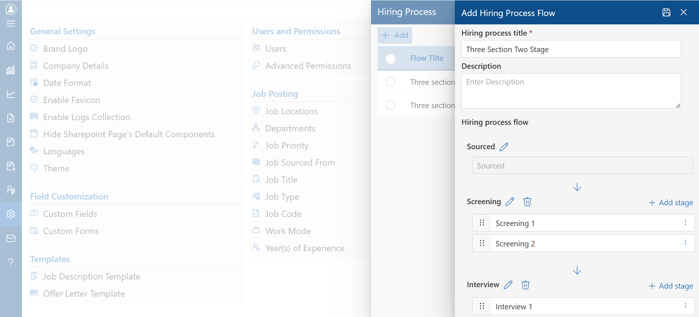
Once all stages are defined, click the Save icon to store the process. The configured flow will then be available for selection in job postings and requisitions.
Complexity Level
Define the complexity level of job roles or evaluation criteria.
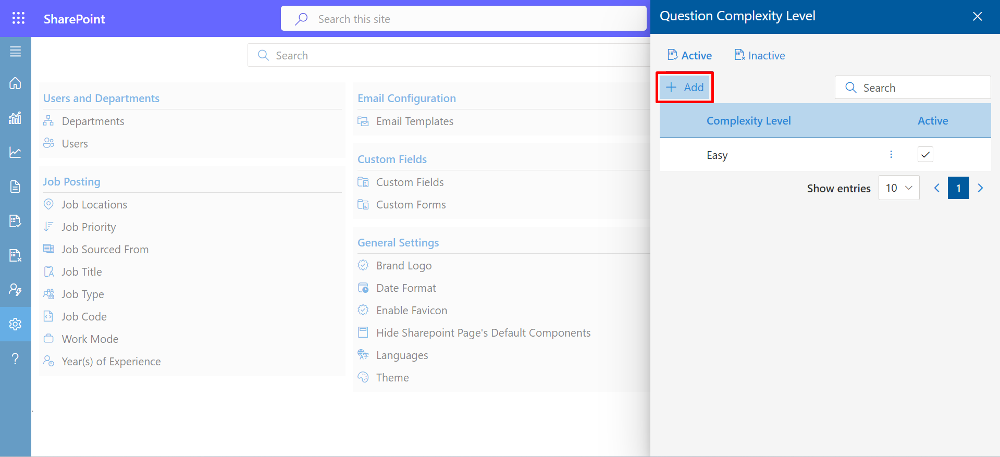
Fill in the required fields and click “Save” to store the entry.
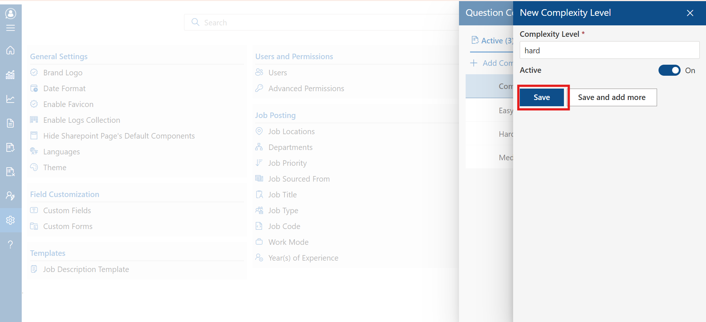
Bulk actions are available when multiple levels are selected. Use the “Set Bulk Inactive” option as needed.
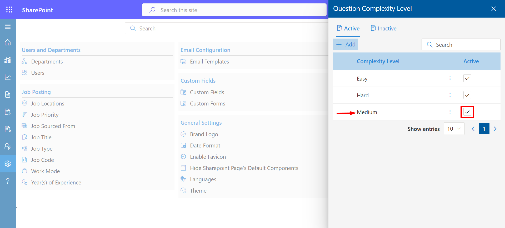
Inactive levels are listed separately and can be reactivated via checkbox.
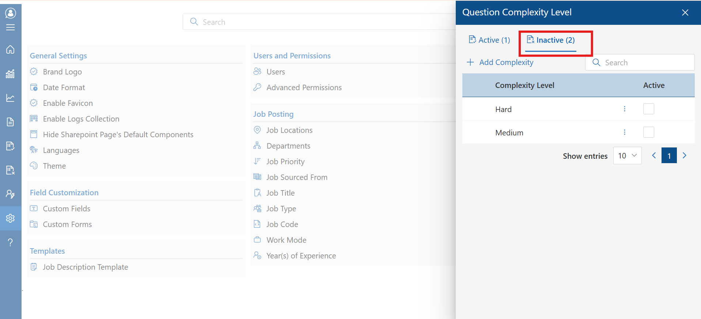
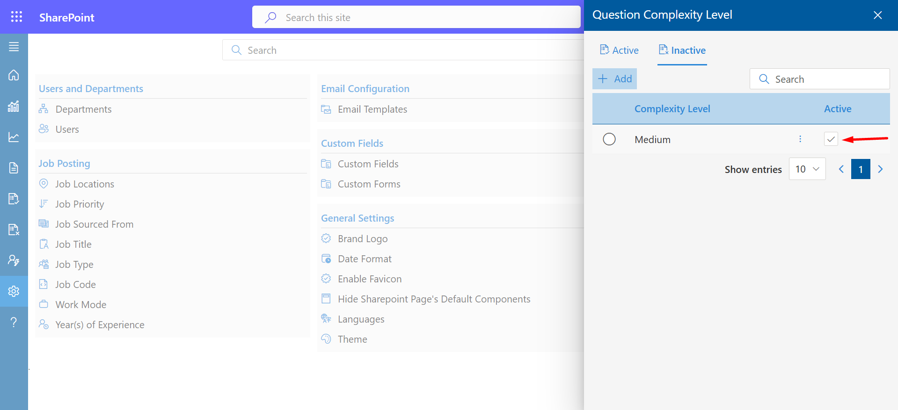
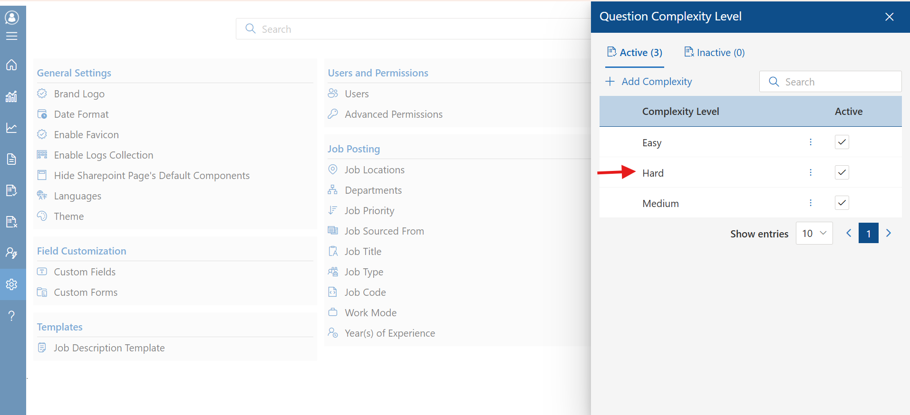
During setup, use the toggle to define default status. “On” adds the level to active; “Off” moves it to inactive.
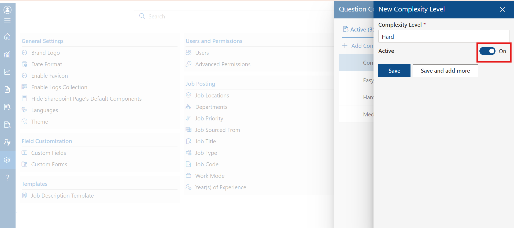
Score Card
Click the “+Add” button to create a new scorecard for candidate evaluation.
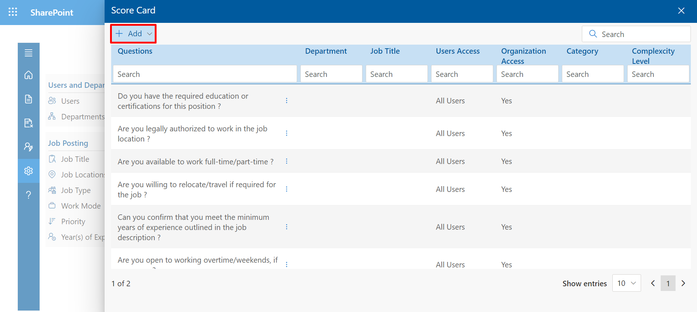
Define criteria and metrics, then click “Save” to finalize the scorecard.
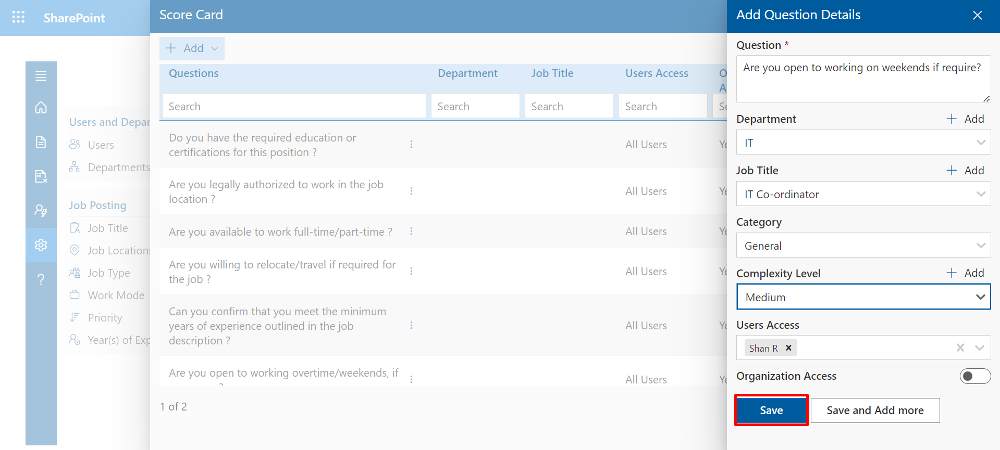